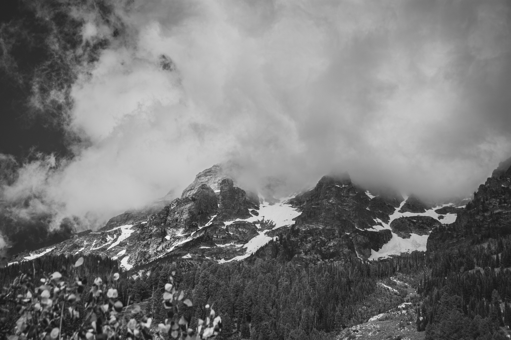
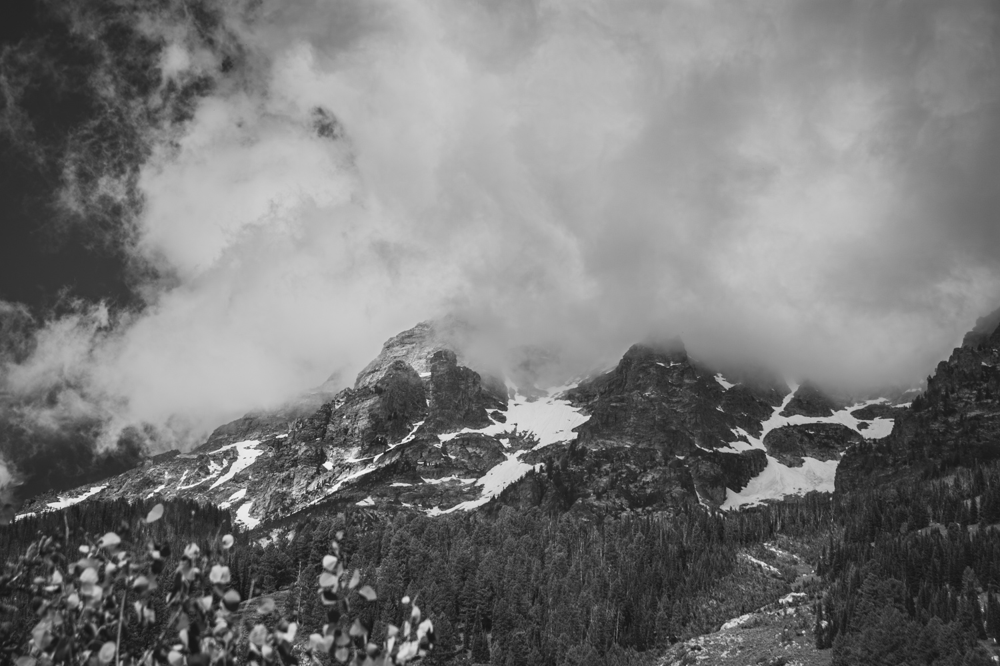
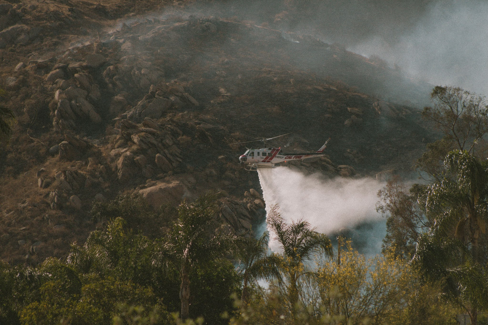
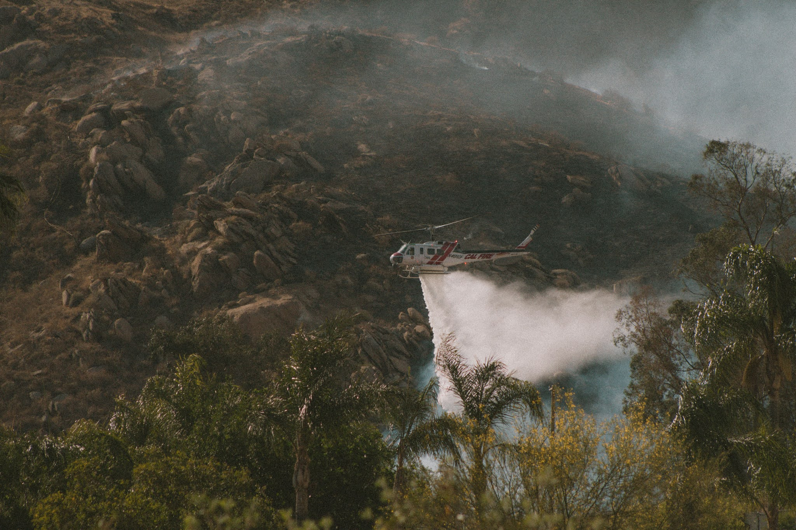

 


About Me
Born and raised under the golden skies of Southern California, I have always been drawn to the vast and vibrant landscapes that define not just my home, but the entire West Coast. My passion for exploration has taken me from the sun-kissed beaches of my childhood to the rugged coastlines and majestic mountains that stretch from California to Oregon. Along these journeys, I've cultivated a deep appreciation for the natural world, an appreciation that has become the cornerstone of my photographic work. My favorite subjects to photograph are the landscapes and wildlife that I encounter on my travels. There's a particular thrill in capturing the fleeting moments of beauty found in nature—whether it's the serene grace of a bird in flight or the untamed majesty of wild animals in their natural habitats. Through my lens, I strive to convey not just the visual splendor of these scenes, but the emotional resonance they hold. Photography, for me, is more than just a profession or a hobby; it's a way of seeing the world and sharing its hidden wonders with others. Each image I capture is a testament to my journey, a moment frozen in time that speaks to the awe-inspiring beauty of the natural world. Join me as I continue to explore, discover, and capture the breathtaking landscapes and wildlife of the West Coast and beyond.